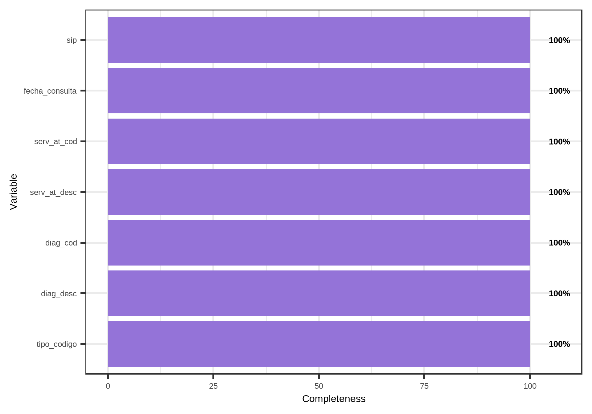
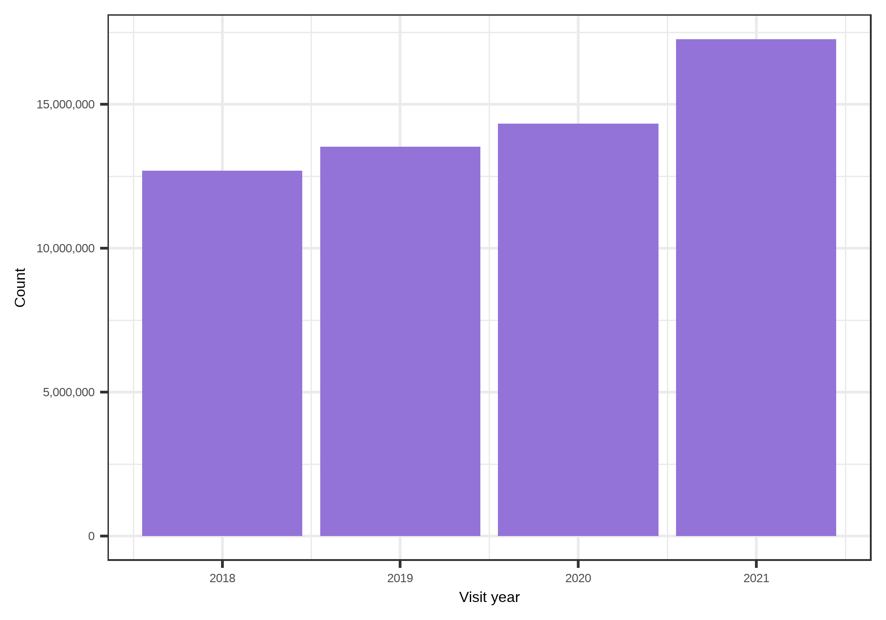
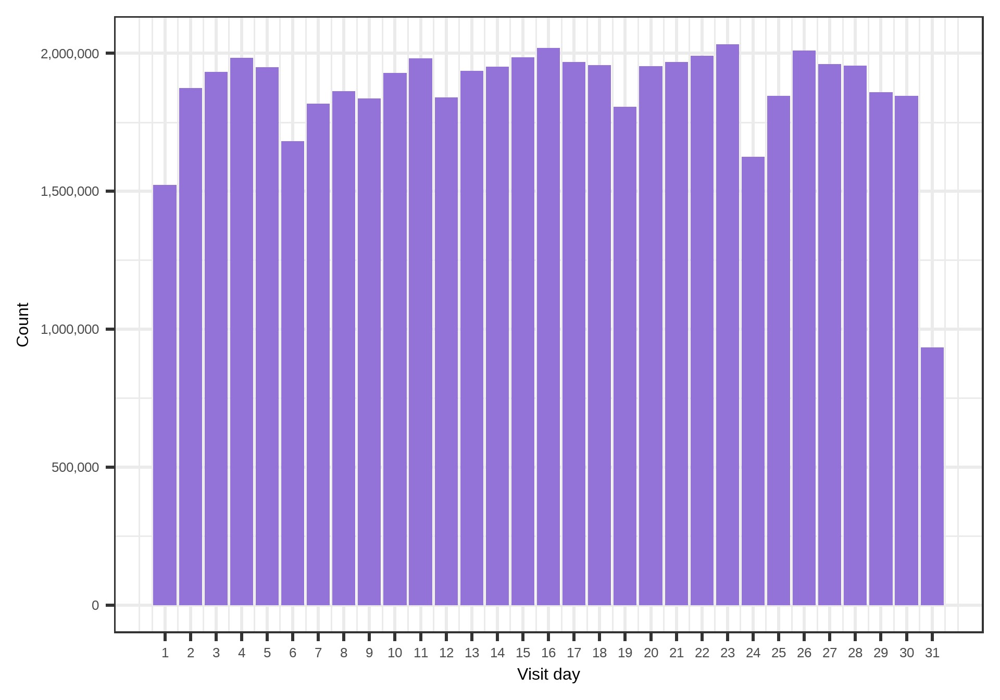
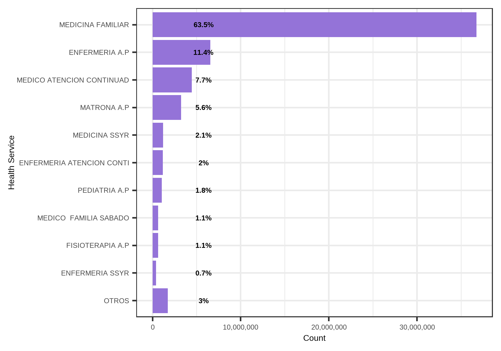
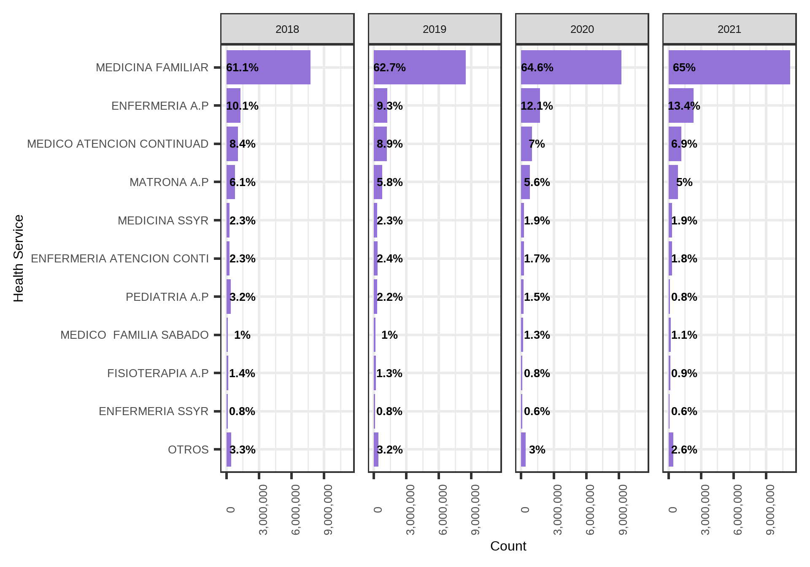
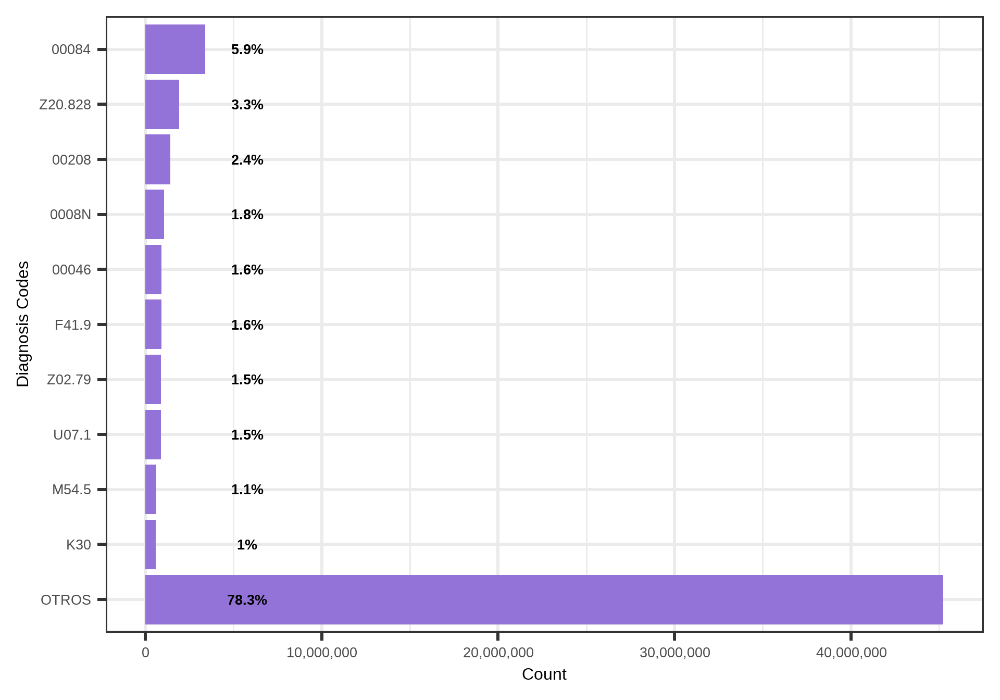
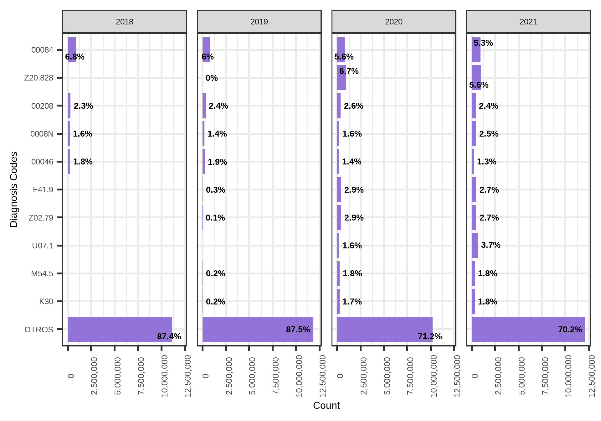
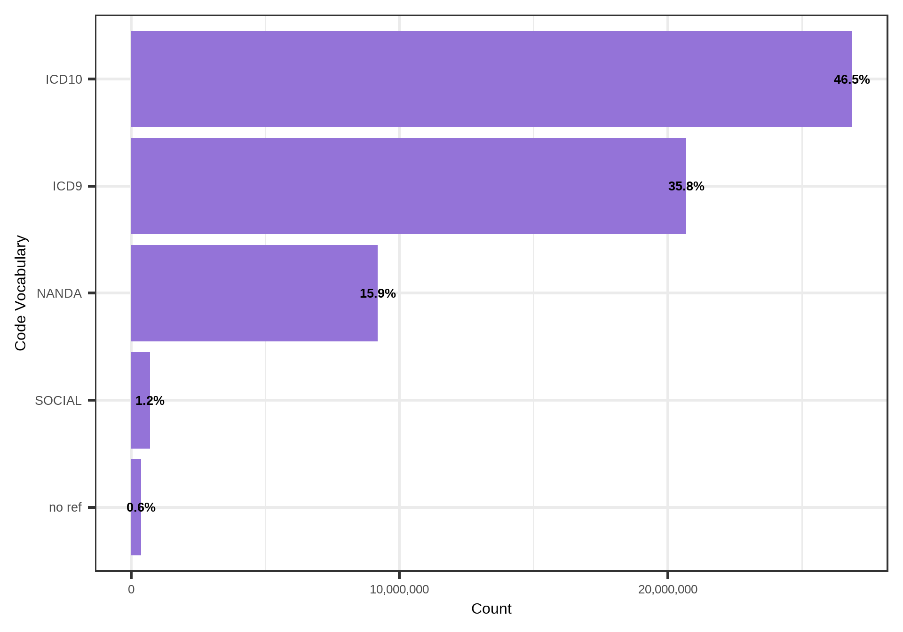
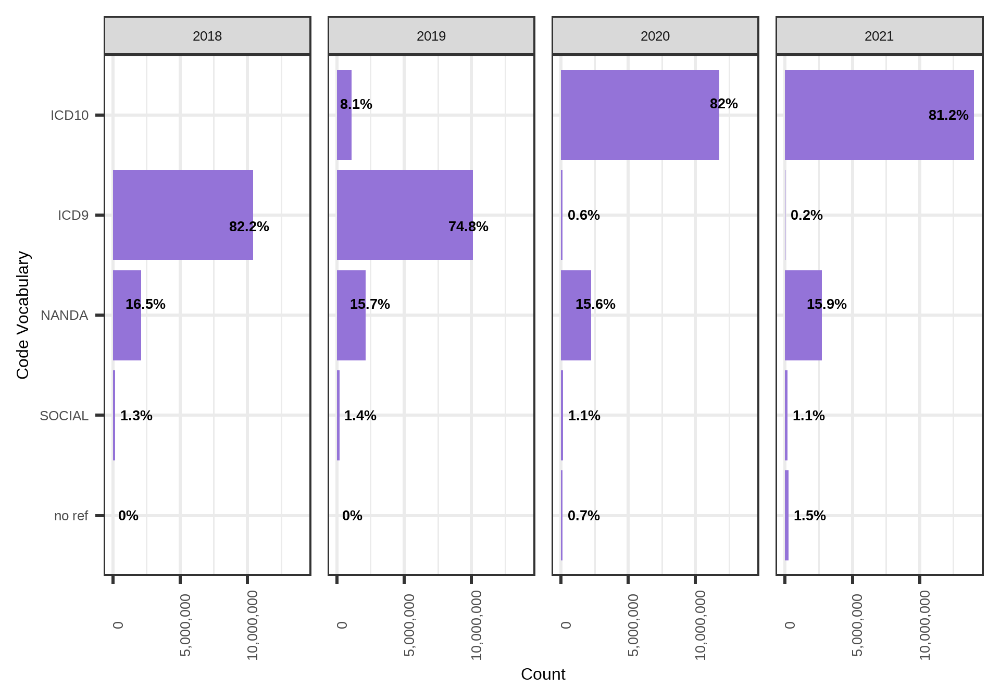

4 Quality Check: Processing PCV. Empadronados 2018-2021
4.1 Input
The table to be analysed is pcv_2018_2021_clean.csv.
4.2 Check variables
The variables extracted from PCV are: sip, fecha_consulta, serv_at_cod, serv_at_desc, diag_cod, diag_desc, and tipo_codigo.
4.2.1 Check mandatory vars
All mandatory vars are present.
4.2.2 Check all vars
All possible vars are present.
4.2.3 Completeness
In Figure 4.1 is shown the percentage of non-missing values for each variable. Non-mandatory variables are shown at the bottom of the figure.

4.3 Check content
The PCV table has a total of n = 57 809 992 observations.
4.3.1 Population
- In PCV table there are 1 468 781 distinct individuals. All the individuals are included in the target population. Therefore, there are 1 468 781 individuals included in the target population out of the 1 842 818 total individuals in the cohort. These represents 79.7% of the total.
- The Table 7.1 shows the number of individuals per year of the study period.
| Year of visit | Count of distinct individuals |
|---|---|
| 2018 | 1169350 |
| 2019 | 1193104 |
| 2020 | 1183072 |
| 2021 | 1281413 |
4.3.2 Date of the visit
The variable fecha_consulta is missing in 0 observations, so it is 100% complete. The minimum and maximum date are 2018-01-01 and 2021-12-31 respectively. Table 5.2 shows the number of visits per year of fecha_consulta.
All visits are inside the study period.
| Year of the visit | Count |
|---|---|
| 2018 | 12696814 |
| 2019 | 13522930 |
| 2020 | 14332240 |
| 2021 | 17258008 |
The month and year with less visits was April 2020 with n = 787687 and the month and year with more visits was January 2021 with n = 1781442.
In Figure 4.2, Figure 4.3, and Figure 4.4 are presented the frequencies of years, months, and days of the visits respectively.



4.3.3 Visit service
The variable serv_at_desc is missing in 0 observations, so it is 100% complete. Table 7.4 shows all the services used in the primary care visits arranged by alphabetic order. Figure 4.5 shows the count of the utilization of each visit service. Finally, Figure 4.6 shows the count of visits for the 10 most used services per year.
| Service | Count | Percentage |
|---|---|---|
| EDUCACION-COVID ENFERMERI | 2037 | 0.00% |
| EDUCACION-COVID MEDICINA | 636 | 0.00% |
| ENF EDUCACION ESPECIAL | 6571 | 0.01% |
| ENF. GEST CASOS COMUNITAR | 17177 | 0.03% |
| ENFERMERIA A.P | 6566942 | 11.36% |
| ENFERMERIA ATENCION CONTI | 1159237 | 2.01% |
| ENFERMERIA DE EMPRESA | 461 | 0.00% |
| ENFERMERIA RESID 3A EDAD | 3484 | 0.01% |
| ENFERMERIA SABADO | 290384 | 0.50% |
| ENFERMERIA SSYR | 403668 | 0.70% |
| ENFERMERIA UCAS | 144490 | 0.25% |
| ENFERMERO INSPECTOR | 145891 | 0.25% |
| EQUIPO MOVIL BROTE 1 ENF | 130 | 0.00% |
| FARMACIA ATENC. PRIMARIA | 629 | 0.00% |
| FISIOTERAPIA A.P | 628765 | 1.09% |
| HIGIENISTA DENTAL | 11382 | 0.02% |
| MATRONA A.P | 3239080 | 5.60% |
| MED. RESID. 3ª EDAD | 53897 | 0.09% |
| MEDICINA FAMILIAR | 36722741 | 63.52% |
| MEDICINA INST PENITENCIAR | 10 | 0.00% |
| MEDICINA SSYR | 1206676 | 2.09% |
| MEDICINA UCAS | 162076 | 0.28% |
| MEDICO FAMILIA SABADO | 641947 | 1.11% |
| MEDICO ATENCION CONTINUAD | 4459602 | 7.71% |
| MEDICO EMPRESA | 42139 | 0.07% |
| MEDICO INSPECTOR | 132005 | 0.23% |
| ODONTOLOGIA PREVENTIVA | 72562 | 0.13% |
| PEDIATRA SABADO | 20000 | 0.03% |
| PEDIATRIA A.P | 1061234 | 1.84% |
| PERSONAL OTROS | 1446 | 0.00% |
| PERSONAL PRIMARIA | 932 | 0.00% |
| PSICOLOGIA ESTIMUL PRECOZ | 4 | 0.00% |
| PSICOLOGIA UCAS | 95357 | 0.16% |
| PSIQUIATRIA RESID 3 EDAD | 58 | 0.00% |
| SEXOLOGIA SSYR | 96134 | 0.17% |
| TERAPEUTA OCUPACIONAL | 1197 | 0.00% |
| TRABAJADOR SOCIAL | 390967 | 0.68% |
| TRABAJADOR SOCIAL UCAS | 14588 | 0.03% |
| UNIDAD DE DESHABITUACIÓN | 446 | 0.00% |
| VACUNACION | 2323 | 0.00% |
| VACUNACION COVID-19 | 10669 | 0.02% |
| VACUNACION PFIZER | 18 | 0.00% |


4.3.4 Diagnoses codes
The variable diag_cod is missing in 0 observations, so it is 100% complete. Figure 4.7 shows the most employed diagnoses codes. Finally, Figure 4.8 shows the count of the 10 most employed codes per year.


4.3.5 Code vocabulary
The variable tipo_codigo is missing in 0 observations, so it is 100% complete. Figure 4.9 shows the count of the utilization of each visit service. Finally, Figure 4.10 shows the count of visits for the 10 most used services per year.

